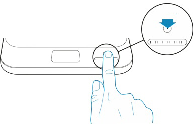

| 3/5 | Pour peser bébé, démarrez la balance en touchant son bouton principal avec le bout du doigt. La balance démarre alors et affiche 0.00 kg.  Si vous souhaitez ajouter un linge ou matelas sur le berceau, touchez de nouveau le bouton pour tarer. Vous pouvez ensuite allonger bébé sur le berceau.
|